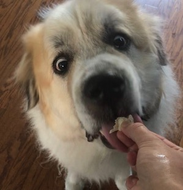
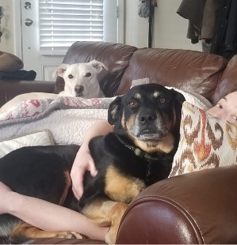
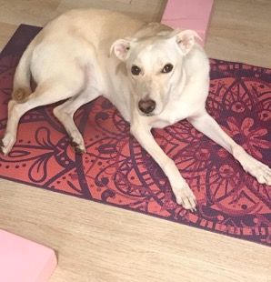

Kate Pearce
About Me
Mathematicians like non-math stuff, too! My non-math interests include dogs, plants, art, and drums.
Dogs
I have three dogs, with whom I have fulfilling and mildly rage-inducing familial relationships. You'll probably see and/or hear them in Zoom meetings, along with my human family.
 Mobius, or Moby as he's called by his friends, is a self-assured Great Pyrenees with a heart of gold and a blatant expression of brooding and endless disappointment. Likely to boof at things outside.
Cope is a black and tan mutt who overly enjoys eating, chewing on toys, and going for walks, so pretty much your typical dog. Likely to run into fence chasing squirrels.
Little Bit--sometimes Lil Bit, it's still debated and the official spelling has never been established--is our smallest and most spoiled foster failure, but what she lacks in stature she makes up for in attitude. Likely to sleep in a cute and improbable position.
Plants
My house has been overtaken by an excessive number of plants that are the boon of my existence but the bane of my partner's and dogs'. If you want to see some of my plants, stay tuned!
Art
I love to draw and paint, and I like to look at what other people have drawn and painted. If you want to see some of my drawings and paintings, stay tuned!
Drums
Playing drums is the best stress reliever I've found, plus it's really fun. No videos yet, but I'm currently working on "Obstacle 1" by Interpol. Some of my other major influences are Earl Hudson from Bad Brains and Brad Wilk from RATM.
Image
Fit